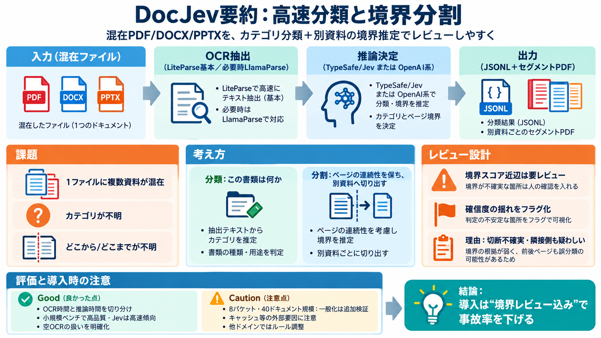

DocJev: Jev Document Classify & Split, 6x Faster (2026) | explainx.ai Blog | explainx.ai
| Question | Direct answer | --- | | What does DocJev actually do? | Two decisions: classify a document into a category…

| Question | Direct answer | --- | | What does DocJev actually do? | Two decisions: classify a document into a category…
| 58Image 59Google Gemini 3.1 Flash Lite | 58.3 | 85.5 | 9.9 | 89.5 | 58.4 | 48.4 | 0.3¢ | | 59Image 60Google Gemini 3.5…
\As of August 2026, per official pricing pages in `sources`. LlamaParse's range reflects its Cost-effective (3 credits/p…
all 225 long documents with zero failures, while LlamaExtract (Agentic) failed on 9.8% of documents; every failed docume…
Introducing ExtractBench, the most comprehensive document extraction benchmark. Learn More → Product LlamaParse …